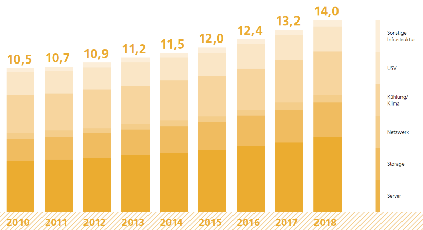

Energie¶
Der Energiebedarf der Gesellschaft ist die Hauptursache der anthropogenen Treibhausgasemissionen. Entsprechend stellt die Energiewende einen wesentlichen Beitrag zum Klimaschutz der Klimastadt Ulm dar. Bei der Energiewende geht es darum, konventionelle Energieträger in Zukunft durch erneuerbare Energien wie Wasserkraft, Wind, Sonne, Biomasse bzw. Biokraftstoffe und Geothermie zu ersetzen. 1 Neben der Energieproduktion stellt der bedarfsgerechte Einsatz erneuerbarer Energien und deren Speicherung einen weiteren Schlüsselfaktor dar. Dabei spielen die Verbrauchssektoren für Heiz- und Kühlenergie in Industrie, Gewerbe, Handel und Dienstleitung sowie in Wohn- und Verwaltungsgebäuden eine entscheidende Rolle. Der suffiziente 2 Einsatz von erneuerbaren Energien ist damit als eine gemeinsame Aufgabe von Verbraucher:innen, Unternehmen, Vermieter*innen und politischen Entscheidungsträger:innen anzusehen (Schneidewind, 2017).
Im Rahmen des Integrierten Stadtentwicklungskonzept Ulm (ISEK) und dem Klimaschutzkonzept Ulm wurden diese zentralen Herausforderungen bereits skizziert und als Leitlinie in den zukünftigen Stadtentwicklungsprozessen verankert. 3 Eine daran angepasste Netz- und Digitaltechnologie kann im hohen Maße dazu beitragen, die Einzelbausteine der Energiewende zusammenzuführen und auf geeignete Art und Weise zu implementieren. Aufgrund dessen werden diese Zielsetzungen auch durch die Ulmer Smart City Strategie und die darin formulierten Zukunftsaufgaben gerahmt. Dabei soll der Einsatz von digitalen Technologien und Smart Grid Systemen zur intelligenten Steuerung der Energieproduktion und des Energieverbrauchs, weiter ausgebaut werden. Mit dem Projekt „Projekthaus Ulm – Sektorkopplung für Elektromobilität“ wurden dafür in Ulm bereits erste Erkenntnisse gewonnen, auf denen weiter aufgebaut werden könnte (Ruf & Kober, 2019). Vor diesem Hintergrund werden im Rahmen des Handlungsfelds Energie insbesondere digitale Herausforderungen für die Energieproduktion und den suffizienten und energieeffizienten Einsatz von erneuerbaren Energien fokussiert. Anschließend werden daraus Ziele abgeleitet, die sich an (1) die Flächenpotenzialbestimmung für erneuerbare Energien auf einer zusammenführenden Ulmer Plattform, (2) den Einsatz von Smart Meter, Smart Grids sowie Micro Grids und (3) die digitale Energiewende als Bürgerprojekt richten. Das Handlungsfeld fungiert dabei als zusammenführende Schnittstelle und weist mehrere Querbezüge zu den Handlungsfeldern Klima und Umwelt, Mobilität und Städtebau, Gebäude und Wohnen auf.
Herausforderungen¶
Im Bereich der Energieproduktion ist die Förderung von umweltverträglichen Photovoltaik-Anlagen, Wasserkraft, Windenergie, Bioenergie aus Reststoffen, Biomassenanbau oder Tiefengeothermie auch mit Herausforderungen verbunden. Durch die geringere Energiedichte erneuerbarer Energien und der Flexibilisierung verschiedener nachhaltiger Energieproduktionssysteme entsteht ein (1) höherer Flächenbedarf als bei der herkömmlichen fossilen Energieerzeugung (Peters, et al., 2015). Die verstärkte Raumwirksamkeit erneuerbarer Energien und die daran gekoppelten Flächenpotenzialbestimmungen stellen Herausforderungen des Handlungsfelds dar. Der digitalen Erfassung und Zusammenführung von Eignungsmerkmalen sowie Nutzungs- und Schutzbelangen kommt dabei eine übergeordnete Rolle zu.
Neben der Bestimmung von Flächenpotenzialen stellt die (2) Gewährleistung umfassender Transparenz und Beteiligungsverfahren eine weitere zentrale Herausforderung des Handlungsfelds dar. Um die zivilgesellschaftliche Beteiligung am flächenwirksamen Ausbau von erneuerbaren Energien langfristig zu ermöglichen ist es erforderlich, potenzielle Widerstände, wie etwa rechtliche Rahmenbedingungen und Flächennutzungseinschränkungen, in die Analyse der Flächenpotenziale frühzeitig miteinzubinden. Die Suche nach geeigneten digitalen Beteiligungs- und Informationsformaten ist dabei von höchster Bedeutung und insbesondere unter den aktuellen pandemiebedingten Kontaktbeschränkungen grundlegend, um etwaigen Konfliktpunkten frühzeitig vorbeugen zu können.
Aufgrund der (3) dezentralen und fluktuierenden Verfügbarkeit erneuerbarer Energien stellt deren großflächige Integration in bestehende netzgebundene Elektrizitätssysteme eine zunehmende Herausforderung an existierende Infrastrukturen und Regulierungen. Die Systemintegration ist eine Voraussetzung, um z. B. auch das in vielen Szenarien noch unterschätzte Potenzial der Photovoltaik erschließen zu können. Gleichzeitig steigen die Kosten für neue Infrastrukturen mit der zunehmenden Einbindung erneuerbarer Energien.
Der WBGU (2019) weist darauf hin, dass die zunehmende Digitalisierung der Energiesysteme, die enorme Anzahl vom IoT-Geräten, die an die Energienetze angebunden sind und der immer umfangreichere Einsatz von digitalem Monitoring und Steuerungselementen neue Risiken für Resilienz und Privatsphäre bergen. „Smart Grids sind nicht zwangsläufig die robusteren oder effizienteren Systeme und können sogar, etwa bei übermäßiger Automatisierung, Menschen in ihrer individuellen Entscheidungsmacht und Mündigkeit im Sinne nachhaltigen Handelns einschränken“ (WBGU , 2019, S. 194). Entsprechend gilt es, die (4) Energienetze krisenfest zu machen, die Datensouveränität zu behalten und geltende Sicherheitsstandards durchzusetzen.

Abbildung 7: Energiebedarf der Server und Rechenzentren in Deutschland in den Jahren 2010 bis 2018 (HINTEMANN 2020, S. 1)
Eine weitere Herausforderung ist der (5) CO2- und Ressourcenfußabdruck, welcher durch die steigende Nutzung von Technologien entsteht. Bisher sind Abschätzungen zu den direkten und indirekten ökologischen Effekten der Energienachfrage durch die Digitalisierung noch nicht umfangreich erfasst. Das Borderstep Institut (Hintemann, 2020) zeigt aber, dass der Bedarf an elektrischer Energie durch digitale Lösungen gestiegen ist. Da sich das Borderstep Institut seit über 10 Jahren mit den ökologischen Auswirkungen der Digitalisierung beschäftigt, könnte es in Zukunft ein qualifizierter Ansprechpartner für die Stadt Ulm für diese Thematik werden.
Ziele¶
Um die verstärkte Produktion von erneuerbaren Energien zu fördern, deren suffizienten und energieeffizienten Einsatz zu ermöglichen und dieses Vorhaben durch ein transparentes Beteiligungsverfahren einzurahmen, werden im Folgenden digitale Lösungsstrategien diskutiert.
In Bezug auf den Ausbau erneuerbarer Energien in Ulm und im Ulmer Umland kommt der Flächenpotenzialbestimmung eine gesonderte Rolle zu. Mit dem Ulmer Solarkataster und der Photovoltaikpflicht für Neubauten hat die Stadt Ulm damit schon erste Erfahrungen gesammelt. Darüber hinaus sind mit dem Energieatlas Baden-Württemberg bereits Erkenntnisse zum aktuellen Umsetzungsgrad und der Potenzialbestimmung von Photovoltaikfreiflächen, Wasserkraft, Windenergie, Bionenergie aus Reststoffen und Biomassenanbau abrufbar. 4 Denkbar wäre in diesem Zusammenhang, diese Erkenntnisse für Ulm auf einer (1) zusammenführenden digitalen Plattform zu aggregieren und einer genauen Prüfung zu unterziehen. Eine digitale, partizipative und interaktive Plattform könnte darüber hinaus dabei unterstützen, einen bürgerlichen Dialog zu fördern. Die Einbindung und Sensibilisierung der Bürger*innen ist entscheidend, um die Akzeptanz für entsprechende Flächenzuweisungen zu erhöhen oder überhaupt erst möglich zu machen. Der Betrieb der digitalen Plattform sollte aufgrund dessen durch Informationskampagnen, Bottom-up- sowie Citizen-Science-Ansätze ergänzt werden.
Neben der Flächenpotenzialbestimmung für erneuerbare Energien spielen digitale Technologien ebenfalls eine Schlüsselrolle bei den Verbrauchssektoren für Heiz- und Kühlenergie in Wohn- sowie Verwaltungsgebäuden. So kann heutzutage bereits die urbane Energie- und Wassernutzung virtualisiert und verteilt durch intelligente Netze gesteuert werden. Aufgrund dessen wird die (2) Installation intelligenter Netze und Messsysteme empfohlen, die man als Smart Grids oder virtuelle Kraftwerke bezeichnet. Das Institut Energie und Antriebstechnik der Hochschule Ulm könnte hier als qualifizierter Ansprechpartner fungieren, da dort bereits erste Erfahrungen mit der Implementierung virtueller Kraftwerke gesammelt wurden (Stakic & Kleiser, 2016). Virtuelle Kraftwerke können flexibel auf Änderungen im Netz reagieren, also auf die unterschiedliche Energiezufuhr aus Solar-, Wind- oder Wasserenergie und sonstigen erneuerbaren Energiequellen. Aufgrund der Bündelung der dezentralen Energieerzeugung in Kombination mit Speichern können volatile Energiequellen geglättet werden und verlässlich elektrische Leistung bereitgestellt werden. Dabei konnte auch die Anwendung von Blockchain-Technologie und Smart Contracts in Betracht gezogen werden.
Die Daten kann das virtuelle Kraftwerk von intelligenten Strommessern beziehen – also Smart Meter. Vielversprechend wäre in diesem Zusammenhang auch die Installation von sogenannten Smart Meter-Gateways. Gateways fungieren dabei als zentrale Datenschnittstelle und kombinieren Informationen von lokalen Strom-, Wärme-, Gas- und Wasserzählern. Auf diese Weise kann der gesamte Ressourcenverbrauch ermittelt werden, sodass zukünftige und bereits erreichte Einsparpotenziale klar und individuell kommuniziert werden können. 5 Die Stadtwerke Ulm planen bis zu Jahr 2032 insgesamt 150.000 Stromzähler entsprechend umzurüsten und dabei auch Smart Meter-Gateways zu implementieren. 6
Die Installation von Smart Grids zielt darauf ab (3), alle Akteure des Energiesystems zu verbinden und somit eine zeitnahe sowie kosteneffiziente Kommunikation zwischen Netzkomponenten, Erzeugerinnen und Erzeugern, Energiespeichern und Verbraucherinnen und Verbrauchern herzustellen. Die Verbindung der Akteure kann auf unterschiedlichen Ebenen stattfinden: auf kommunaler Ebene könnten den SWU (Stadtwerke Ulm) eine übergeordnete Rolle zugesprochen werden. Die SWU könnten dabei zu einem gesteigerten Konnektivitätsgrad der unterschiedlichen Akteure beitragen, aber auch durch eigene Innovationsprojekte eine Vorreiterrolle übernehmen. Etwaige Best-Practice-Beispiele finden sich unter anderem bei den Stadtwerken Trier, die in ihrer klimaneutralen Trinkwasseraufbereitung auf künstliche neuronale Netzwerke zurückgreifen.7
Um die Quartiers- und Gebäudeebene stärker miteinzubeziehen wäre es denkbar, im Rahmen verschiedener partizipativer Leuchtturmprojekte einen (4) stakeholderübergreifenden und plattformgestützten Dialog zu fördern und den städtischen Energieverbrauch mithilfe entsprechender Mess- und Regelungstechnik dezentraler und demokratischer zu gestalten. Ein solcher Ansatz passt zu den Ulmer Werten, die auf selbstbewusste und engagierte Bürgerinnen und Bürger setzen (s. 2.4). Das Projektteam „Energie aus Bürgerhand“ der „lokalen agenda ulm 21“ könnte sich der Idee annehmen und Microgrids in Quartieren voranbringen. Microgrids sind Energiesysteme, die aus miteinander verbundenen Lasten und verteilten Energieressourcen bestehen, die als ein integriertes System innerhalb einer definierten elektrischen Grenze arbeiten können. Da dieser Ansatz Kontrolle über unser Elektrizitätssystem an den Endverbraucher gibt, ist er geeignet beispielsweise für (autarke) Quartiere oder Gewerbegebiete. Um ein solches Projekt umzusetzen, eignet sich die Zusammenarbeit mit der Smart Grid Forschungsgruppe an der Technischen Hochschule Ulm sowie die Orientierung an den international prämierten Best-Practice-Beispielen der Leuchtturmprojekte „Grow Smarter“ aus Stockholm 8 und „WIR“ aus dem Landkreis Oberallgäu 9.
Maßnahmen¶
Nummer |
Titel |
Beschreibung |
|---|---|---|
01 |
Digitale Plattform |
Digitale Plattform zur Flächenpotenzialbestimmung, die darüber hinaus einen bürgerlichen Dialog fördert. |
02 |
Intelligente Netze und Messsysteme |
Intelligente Netze und Messsysteme, die flexibel auf Änderungen im Netz reagieren können. |
03 |
Smart Meter-Gateways |
Smart Meter-Gateways fungieren als zentrale Datenschnittstelle und kombinieren Informationen von lokalen Strom-, Wärme-, Gas- und Wasserzählern. |
04 |
Smart Grids |
Smart Grids zielen darauf ab, alle Akteure des Energiesystems zu verbinden und somit eine zeitnahe sowie kosteneffiziente Kommunikation zu ermöglichen. |
05 |
Microgrids |
Microgrids sind Energiesysteme, die aus miteinander verbundenen Lasten und verteilten Energieressourcen bestehen, die als ein integriertes System innerhalb einer definierten elektrischen Grenze arbeiten können. |
- 1
Stadt Ulm, 2019: Integriertes Stadtentwicklungskonzept der Stadt Ulm (ISEK)
- 2
https://www.bund.net/ressourcen-technik/suffizienz/suffizienz-was-ist-das/
- 3
Stadt Ulm, 2019: Integriertes Stadtentwicklungskonzept der Stadt Ulm (ISEK)
- 4
https://www.energieatlas-bw.de/energieatlas
- 5
https://www.bsi.bund.de/DE/Themen/DigitaleGesellschaft/SmartMeter/SmartMeterGateway/smartmetergateway_node.html
- 6
https://www.ulm-netze.de/leistungen/privatkunden/digitale-zaehler
- 7
https://www.swt.de/p/CO2_freies_Trinkwasser_für_Trier-5-7330.html
- 8
https://grow-smarter.eu/lighthouse-cities/stockholm/
- 9
https://www.allgaeu-klimaschutz.de/wildpoldsried.html